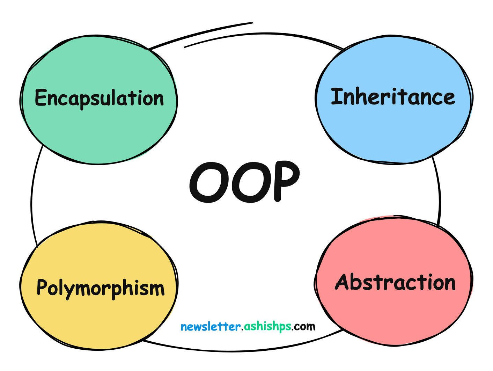

Four Core Concepts of OOP#
DS212 — Object-Oriented Programming
Week 7: · Suggested class time: 5 hours (2-hour lecture + 3-hour laboratory)
ILO :
Abstraction and Encapsulation — Apply abstraction and encapsulation to design cohesive classes with controlled access to state and behavior.
Inheritance and Method Overriding — Implement inheritance hierarchies, method overriding, and
super()to reuse and extend class behavior.Polymorphism and Composition — Apply polymorphism, duck typing, and composition to produce flexible object-oriented designs.


Fig. 3 Object-Oriented Programming Core Concepts#
In the previous lessons we learned how to define classes and create objects, and how to visualize a design using a class diagram. Knowing how to write a class, however, does not automatically produce a good object-oriented program.
Object-oriented programming rests on four ideas that guide how we design classes and how classes relate to one another. These are commonly called the four core concepts (or four pillars) of OOP:
Concept |
Guiding question |
Key Python tools |
|---|---|---|
Abstraction |
What should the user of this class need to know? |
methods, |
Encapsulation |
Who is allowed to read or change the object’s state? |
|
Inheritance |
Is this class a specialized kind of another class? |
|
Polymorphism |
Can different objects be used through the same interface? |
method overriding, duck typing, composition |
flowchart TB
OOP["Object-Oriented Design"]
OOP --> A["Abstraction<br/>hide complexity"]
OOP --> E["Encapsulation<br/>protect state"]
OOP --> I["Inheritance<br/>reuse & specialize"]
OOP --> P["Polymorphism<br/>one interface, many forms"]
The concepts are not independent topics to be memorized separately. As we will see at the end of this lesson, they work together: abstraction decides the interface, encapsulation protects what is behind it, inheritance shares and specializes it, and polymorphism lets the rest of the program use it without caring about the specific class.
Abstraction — “show what, hide how”#
Abstraction means exposing only the essential features of an object while hiding the details of how those features are carried out.
You already rely on abstraction every day:
you drive a car through a steering wheel and pedals without managing fuel injection;
you call
df.mean()in pandas without writing the loop that computes it;you call
sorted(data)without knowing which sorting algorithm Python uses.
What the user sees What is hidden
┌───────────────────────────┐ ┌───────────────────────────┐
│ dataset.load() │ │ open file, detect encoding│
│ dataset.summary() │ → │ parse rows, convert types │
│ │ │ compute statistics │
└───────────────────────────┘ └───────────────────────────┘
In OOP, abstraction appears as the public interface of a class — the set of methods other code is expected to call.
Abstraction Through a Simple Interface#
Consider a class that summarizes a list of numeric values. The user of the class only needs summary(); the helper calculations are internal details.
class NumericColumn:
def __init__(self, name, values):
self.name = name
self.values = list(values)
# ---- public interface -------------------------------------------
def summary(self):
return {
"column": self.name,
"count": len(self.values),
"mean": round(self._mean(), 2),
"std": round(self._std(), 2),
}
# ---- internal details --------------------------------------------
def _mean(self):
return sum(self.values) / len(self.values)
def _std(self):
m = self._mean()
return (sum((x - m) ** 2 for x in self.values) / len(self.values)) ** 0.5
scores = NumericColumn("exam_score", [78, 85, 92, 66, 88])
scores.summary()
{'column': 'exam_score', 'count': 5, 'mean': 81.8, 'std': 9.13}
If we later decide to compute the standard deviation with statistics.pstdev() or with NumPy, code that calls summary() does not change. That is the practical benefit of abstraction: the interface stays stable while the implementation is free to improve.
Abstract Base Classes#
Sometimes we want to define an interface before any concrete implementation exists. Python’s abc module lets us declare an abstract base class (ABC): a class that describes what methods must exist but cannot be instantiated by itself.
classDiagram
class DataSource {
<<abstract>>
+read()* list
+describe() str
}
class CSVSource {
+String path
+read() list
}
class APISource {
+String url
+read() list
}
DataSource <|-- CSVSource
DataSource <|-- APISource
In UML, an abstract class is marked with <<abstract>> and abstract methods are written in italics (shown here with *).
from abc import ABC, abstractmethod
class DataSource(ABC):
@abstractmethod
def read(self):
'''Return the records as a list of dictionaries.'''
def describe(self):
records = self.read()
return f"{type(self).__name__}: {len(records)} records"
class CSVSource(DataSource):
def __init__(self, path):
self.path = path
def read(self):
# A real implementation would use the csv module or pandas.
return [{"id": 1, "score": 90}, {"id": 2, "score": 75}]
class APISource(DataSource):
def __init__(self, url):
self.url = url
def read(self):
# A real implementation would send an HTTP request.
return [{"id": 10, "score": 88}]
print(CSVSource("grades.csv").describe())
print(APISource("https://example.org/grades").describe())
CSVSource: 2 records
APISource: 1 records
An abstract class cannot be instantiated, because part of its behavior is intentionally missing:
try:
source = DataSource()
except TypeError as error:
print("TypeError:", error)
TypeError: Can't instantiate abstract class DataSource without an implementation for abstract method 'read'
The same error appears if a subclass forgets to implement an abstract method. The abstract base class therefore acts as a contract: every data source must know how to read().
Design tip: Good abstraction starts by asking “What does the caller need?” rather than “What data do I have?” Name methods after the caller’s goal (
load(),summary(),predict()), not after the internal steps.
Encapsulation — “protect the state”#
Encapsulation means bundling an object’s data together with the methods that operate on it, and controlling access to that data so the object cannot be placed in an invalid state.
Abstraction and encapsulation are closely related but answer different questions:
Abstraction |
Encapsulation |
|---|---|
Focuses on the outside view |
Focuses on the inside protection |
Decides what is exposed |
Decides how access is controlled |
Achieved through interfaces and ABCs |
Achieved through naming conventions and properties |
Recall the BankAccount diagram from the class-diagram lesson:
classDiagram
class BankAccount {
-String account_number
-float balance
+deposit(amount)
+withdraw(amount)
+get_balance()
}
The - marks mean the balance is private: other code should not modify it directly. Without encapsulation, nothing prevents this:
account.balance = -1_000_000 # invalid state, no error raised
Access Conventions in Python#
Python does not have private or protected keywords like Java or C++. Instead, it relies on naming conventions:
Name |
Convention |
Meaning |
|---|---|---|
|
public |
Part of the interface; safe to use from outside |
|
protected (by convention) |
Internal; “please do not touch” — still accessible |
|
private (name-mangled) |
Python renames it to |
“We are all consenting adults here.” — Python trusts programmers to respect conventions rather than enforcing strict access rules.
class Account:
def __init__(self, owner, balance):
self.owner = owner # public
self._currency = "PHP" # protected by convention
self.__balance = balance # private (name-mangled)
acct = Account("Ana", 5000)
print(acct.owner)
print(acct._currency)
try:
print(acct.__balance)
except AttributeError as error:
print("AttributeError:", error)
# Name mangling only renames the attribute; it is not true security.
print(acct._Account__balance)
Ana
PHP
AttributeError: 'Account' object has no attribute '__balance'
5000
Properties, Access, and Validation#
The Pythonic way to control access is the @property decorator. A property looks like a normal attribute to the caller, but it runs a method behind the scenes, which lets us validate values before they are stored.
class BankAccount:
def __init__(self, account_number, balance=0.0):
self._account_number = account_number
self._balance = 0.0
self.deposit(balance)
@property
def account_number(self): # read-only: no setter defined
return self._account_number
@property
def balance(self): # read-only from outside
return self._balance
def deposit(self, amount):
if amount < 0:
raise ValueError("Deposit amount must be non-negative.")
self._balance += amount
def withdraw(self, amount):
if amount <= 0:
raise ValueError("Withdrawal amount must be positive.")
if amount > self._balance:
raise ValueError("Insufficient funds.")
self._balance -= amount
account = BankAccount("2026-0001", 1000)
account.withdraw(250)
print("Balance:", account.balance)
for action in (lambda: account.withdraw(5000),
lambda: setattr(account, "balance", 999999)):
try:
action()
except (ValueError, AttributeError) as error:
print(type(error).__name__ + ":", error)
Balance: 750.0
ValueError: Insufficient funds.
AttributeError: property 'balance' of 'BankAccount' object has no setter
A property can also have a setter when outside code should be allowed to change a value — but only to a valid one:
class Student:
def __init__(self, name, gwa):
self.name = name
self.gwa = gwa # goes through the setter below
@property
def gwa(self):
return self._gwa
@gwa.setter
def gwa(self, value):
if not 1.0 <= value <= 5.0:
raise ValueError("GWA must be between 1.0 and 5.0.")
self._gwa = value
s = Student("Juan", 1.75)
s.gwa = 1.50
print(s.name, s.gwa)
try:
s.gwa = 0.25
except ValueError as error:
print("ValueError:", error)
Juan 1.5
ValueError: GWA must be between 1.0 and 5.0.
Encapsulation gives us cohesive classes: the object is responsible for keeping its own data valid, so every other part of the program can trust it.
Without encapsulation With encapsulation
───────────────────── ──────────────────
every caller must validate → the class validates once
bugs spread across files → bugs are contained in one class
state can become invalid → invalid state is rejected early
Inheritance — “is-a”#
Inheritance allows a new class (the derived, child, or subclass) to acquire the attributes and methods of an existing class (the base, parent, or superclass). The child can then add new behavior or override inherited behavior.
We already saw inheritance in a class diagram:
classDiagram
Person <|-- Student
Person <|-- Instructor
class Person {
+String name
+String email
+display_info()
}
class Student {
+String student_id
+enroll(course)
+display_info()
}
class Instructor {
+String employee_id
+teach(course)
}
The test for inheritance is the is-a question: a student is a person, an instructor is a person.
Base and Derived Classes#
class Person:
def __init__(self, name, email):
self.name = name
self.email = email
def display_info(self):
return f"{self.name} <{self.email}>"
class Student(Person):
def __init__(self, name, email, student_id):
super().__init__(name, email) # reuse the parent's constructor
self.student_id = student_id
def enroll(self, course):
return f"{self.name} enrolled in {course}"
class Instructor(Person):
def __init__(self, name, email, employee_id):
super().__init__(name, email)
self.employee_id = employee_id
def teach(self, course):
return f"{self.name} teaches {course}"
ana = Student("Ana Cruz", "ana@ustp.edu.ph", "2026-001")
print(ana.display_info()) # inherited from Person
print(ana.enroll("DS212")) # defined in Student
print(isinstance(ana, Person), issubclass(Instructor, Person))
Ana Cruz <ana@ustp.edu.ph>
Ana Cruz enrolled in DS212
True True
Method Overriding and super()#
A child class overrides a method by defining a method with the same name. Inside the override, super() gives access to the parent’s version, so the child can extend rather than completely replace the behavior.
class Student(Person):
def __init__(self, name, email, student_id):
super().__init__(name, email)
self.student_id = student_id
def display_info(self): # override
base = super().display_info() # extend the parent version
return f"{base} | Student ID: {self.student_id}"
print(Person("Maria Reyes", "maria@ustp.edu.ph").display_info())
print(Student("Ana Cruz", "ana@ustp.edu.ph", "2026-001").display_info())
Maria Reyes <maria@ustp.edu.ph>
Ana Cruz <ana@ustp.edu.ph> | Student ID: 2026-001
Student("Ana Cruz", ...).display_info()
│
├── super().display_info() → "Ana Cruz <ana@ustp.edu.ph>" (Person)
└── + " | Student ID: 2026-001" (Student)
Forgetting to call super().__init__() is a common bug: the child object would never receive the attributes the parent constructor creates.
Multiple Inheritance and Method Resolution Order#
Python allows a class to inherit from more than one parent. When several parents define the same method, Python decides which one to use by following the Method Resolution Order (MRO).
classDiagram
Person <|-- Student
Person <|-- Employee
Student <|-- TeachingAssistant
Employee <|-- TeachingAssistant
class Person:
def role(self):
return "person"
class Student(Person):
def role(self):
return "student"
class Employee(Person):
def role(self):
return "employee"
class TeachingAssistant(Student, Employee):
pass
ta = TeachingAssistant()
print(ta.role())
print([cls.__name__ for cls in TeachingAssistant.__mro__])
student
['TeachingAssistant', 'Student', 'Employee', 'Person', 'object']
Python searches the classes from left to right in the order shown by __mro__, so TeachingAssistant uses Student.role(). Multiple inheritance is powerful but can quickly make designs hard to follow, which leads to the next point.
Inheritance Design Considerations#
Inheritance creates a strong coupling between parent and child: a change in the parent affects every child. Before using it, ask:
Is it truly an is-a relationship? A
Caris not anEngine; aStackis not really alist.Would every method of the parent make sense for the child? If you find yourself overriding a method only to raise an error, the hierarchy is probably wrong.
Is the hierarchy shallow? Deep chains (
A → B → C → D → E) are hard to read and debug.Am I inheriting only to reuse code? If so, composition (next section) is often the better choice.
Polymorphism — “one interface, many forms”#
Polymorphism (from Greek poly = many, morph = form) means that the same operation can behave differently depending on the object it is applied to.
Python’s built-in functions are already polymorphic:
print(len("DS212")) # characters in a string
print(len([1, 2, 3])) # items in a list
print(len({"a": 1, "b": 2})) # keys in a dictionary
print(3 + 4, "3" + "4", [3] + [4])
5
3
2
7 34 [3, 4]
Polymorphic Variables and Methods#
With inheritance and overriding, one variable can refer to objects of different classes, and the correct method is chosen at run time.
classDiagram
class Shape {
<<abstract>>
+area()* float
}
Shape <|-- Circle
Shape <|-- Rectangle
Shape <|-- Triangle
import math
from abc import ABC, abstractmethod
class Shape(ABC):
@abstractmethod
def area(self):
...
def __repr__(self):
return f"{type(self).__name__}(area={self.area():.2f})"
class Circle(Shape):
def __init__(self, r):
self.r = r
def area(self):
return math.pi * self.r ** 2
class Rectangle(Shape):
def __init__(self, w, h):
self.w, self.h = w, h
def area(self):
return self.w * self.h
class Triangle(Shape):
def __init__(self, b, h):
self.b, self.h = b, h
def area(self):
return 0.5 * self.b * self.h
shapes = [Circle(1), Rectangle(2, 3), Triangle(4, 5)]
for shape in shapes: # 'shape' takes many forms
print(shape)
print("Total area:", round(sum(s.area() for s in shapes), 2))
Circle(area=3.14)
Rectangle(area=6.00)
Triangle(area=10.00)
Total area: 19.14
The loop never checks if isinstance(shape, Circle): .... Each object knows how to compute its own area, so adding a new Hexagon class requires no change to the loop.
Duck Typing and Interface Consistency#
“If it walks like a duck and quacks like a duck, then it is a duck.”
In Python, polymorphism does not require a common parent class. What matters is that objects provide the same methods — the same interface. This is called duck typing.
class CSVReport:
def export(self, data):
return "\n".join(",".join(map(str, row)) for row in data)
class MarkdownReport:
def export(self, data):
lines = ["| " + " | ".join(map(str, row)) + " |" for row in data]
return "\n".join(lines)
class JSONReport:
def export(self, data):
import json
return json.dumps(data)
def save_report(report, data):
# works with ANY object that has an export(data) method
print(f"--- {type(report).__name__} ---")
print(report.export(data))
table = [["name", "score"], ["Ana", 92], ["Juan", 85]]
for fmt in (CSVReport(), MarkdownReport(), JSONReport()):
save_report(fmt, table)
--- CSVReport ---
name,score
Ana,92
Juan,85
--- MarkdownReport ---
| name | score |
| Ana | 92 |
| Juan | 85 |
--- JSONReport ---
[["name", "score"], ["Ana", 92], ["Juan", 85]]
None of the three report classes inherit from each other, yet save_report() can use all of them. Duck typing is everywhere in data science libraries: scikit-learn works with any estimator that provides fit() and predict(), and pandas can read from any object that behaves like a file.
Interface consistency is what makes duck typing safe. If one report used export(data) and another used to_text(rows), polymorphism would break. Abstract base classes are one way to enforce a consistent interface; duck typing relies on discipline and documentation.
Composition versus Inheritance#
Composition builds complex objects by combining simpler ones (a has-a relationship) instead of extending a parent class (an is-a relationship). Combined with polymorphism, composition produces very flexible designs.
Suppose we need a data-cleaning pipeline. An inheritance-only design quickly explodes:
Cleaner
├── MissingValueCleaner
├── DuplicateCleaner
├── MissingAndDuplicateCleaner ← combinations multiply
├── MissingAndOutlierCleaner
└── MissingDuplicateAndOutlierCleaner ← ...
With composition, a Pipeline has a list of steps, and each step follows the same interface:
classDiagram
Pipeline o-- Step : has many
Step <|.. DropMissing
Step <|.. DropDuplicates
Step <|.. ClipOutliers
class Pipeline {
-list steps
+add(step)
+run(data)
}
class Step {
<<interface>>
+apply(data) list
}
class DropMissing:
def apply(self, data):
return [x for x in data if x is not None]
class DropDuplicates:
def apply(self, data):
return list(dict.fromkeys(data))
class ClipOutliers:
def __init__(self, low, high):
self.low, self.high = low, high
def apply(self, data):
return [min(max(x, self.low), self.high) for x in data]
class Pipeline:
def __init__(self, *steps):
self._steps = list(steps) # composition: Pipeline HAS steps
def add(self, step):
self._steps.append(step)
return self
def run(self, data):
for step in self._steps: # polymorphism: each step applies itself
data = step.apply(data)
return data
raw = [72, None, 85, 85, 300, 64, None, -10]
basic = Pipeline(DropMissing(), DropDuplicates())
print("basic:", basic.run(raw))
full = Pipeline(DropMissing()).add(DropDuplicates()).add(ClipOutliers(0, 100))
print("full: ", full.run(raw))
basic: [72, 85, 300, 64, -10]
full: [72, 85, 100, 64, 0]
New cleaning behavior is added by writing one small class, and any combination of steps is possible without creating new subclasses. This design idea is exactly how sklearn.pipeline.Pipeline works.
Prefer inheritance when… |
Prefer composition when… |
|---|---|
there is a clear, stable is-a relationship |
the relationship is has-a or uses-a |
the child should support all parent behavior |
you only need part of another class’s behavior |
the hierarchy is small and shallow |
behaviors must be mixed and swapped at run time |
Rule of thumb: Favor composition over inheritance — use inheritance when the is-a relationship is genuine, and composition everywhere else.
The Four Concepts Working Together#
Real designs use all four concepts at once. Consider a small model-evaluation component of a data science application:
classDiagram
class Model {
<<abstract>>
-String _name
+name
+fit(X, y)*
+predict(X)* list
}
class MeanModel {
-float _mean
+fit(X, y)
+predict(X) list
}
class ThresholdModel {
-float _threshold
+fit(X, y)
+predict(X) list
}
class Evaluator {
+evaluate(model, X, y) float
}
Model <|-- MeanModel
Model <|-- ThresholdModel
Evaluator ..> Model : uses
Abstraction —
Modeldefines what every model must do:fit()andpredict().Encapsulation — learned values such as
_meanand_thresholdare internal; the name is exposed read-only.Inheritance —
MeanModelandThresholdModelare models and reuse the sharednameproperty.Polymorphism —
Evaluatorworks with any model without knowing its concrete class.
from abc import ABC, abstractmethod
class Model(ABC):
def __init__(self, name):
self._name = name
@property
def name(self):
return self._name
@abstractmethod
def fit(self, X, y):
...
@abstractmethod
def predict(self, X):
...
class MeanModel(Model):
'''Predicts the average target value for every input.'''
def __init__(self):
super().__init__("Mean baseline")
self._mean = None
def fit(self, X, y):
self._mean = sum(y) / len(y)
return self
def predict(self, X):
return [self._mean for _ in X]
class ThresholdModel(Model):
'''Predicts 100 if the study hours exceed a learned threshold, else 60.'''
def __init__(self):
super().__init__("Threshold rule")
self._threshold = None
def fit(self, X, y):
self._threshold = sum(X) / len(X)
return self
def predict(self, X):
return [100 if x > self._threshold else 60 for x in X]
class Evaluator:
def evaluate(self, model, X, y):
predictions = model.predict(X)
mae = sum(abs(p - t) for p, t in zip(predictions, y)) / len(y)
return round(mae, 2)
hours = [1, 2, 3, 6, 7, 8]
grades = [55, 62, 65, 90, 94, 98]
evaluator = Evaluator()
for model in (MeanModel(), ThresholdModel()):
model.fit(hours, grades)
print(f"{model.name:<15} MAE = {evaluator.evaluate(model, hours, grades)}")
Mean baseline MAE = 16.67
Threshold rule MAE = 5.0
Common Design Mistakes#
Mistake 1: Exposing everything#
class Thermometer:
def __init__(self):
self.celsius = 0 # anyone can set celsius = -9999
If a value has rules (valid ranges, types, units), protect it with a property and validate it.
Mistake 2: Getters and setters for everything#
def get_name(self): return self._name
def set_name(self, v): self._name = v
Writing Java-style getters and setters for every attribute adds noise without adding protection. In Python, start with a plain public attribute and switch to a @property only when validation or computation is needed — the caller’s code does not change.
Mistake 3: Inheriting just to reuse code#
classDiagram
list <|-- Stack
A Stack that inherits from list also inherits insert(), sort(), and pop(0) — operations that break the meaning of a stack. A stack has a list; it is not one.
Mistake 4: Type-checking instead of polymorphism#
def area(shape):
if isinstance(shape, Circle):
...
elif isinstance(shape, Rectangle):
...
Every new shape forces you to edit this function. Move the behavior into each class (shape.area()) and let polymorphism choose the right version.
Summary#
Concept |
Core idea |
In Python |
In a class diagram |
|---|---|---|---|
Abstraction |
Expose what, hide how |
public methods, |
|
Encapsulation |
Protect and validate state |
|
|
Inheritance |
Reuse and specialize (is-a) |
|
|
Polymorphism |
One interface, many forms |
overriding, duck typing, composition |
shared methods, |
Abstraction → decide the interface
Encapsulation → protect what is behind it
Inheritance → share and specialize it
Polymorphism → use it without caring about the concrete class
These concepts will be revisited throughout the course: special methods (__str__, __eq__, __add__) are another form of polymorphism, exceptions strengthen encapsulation through validation, and the final OOP project will be assessed on how well your classes apply all four.